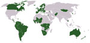
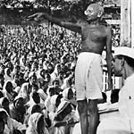

-
1919 CE

In the trials at Nuremberg, the Allied powers prosecute Nazi leaders for war crimes and crimes against humanity. It is the first criminal trial in history to prosecute crimes committed by individuals during wartime.
Goering, Hess, von Ribbentrop, and Keitel in front row
https://www2.gwu.edu/~erpapers/humanrights/timeline/ -
1946-1948 CE
The Tokyo War Crime Trials take place under the Direction of General Douglas MacArthur. As in Nuremberg, Japanese leaders were tried for "crimes against peace" and military officials are tried for "conventional war crimes" and "crimes against humanity."
-

1946 CE
The Economic and Social Council (ECOSOC) of the UN, charged with investigating social and cultural topics, establishes the Commission of Human Rights. The Commission on the Status of Women is established by ECOSOC. Following the Nuremberg trials, an international conference is held in Paris to establish an international criminal code. Out of this meeting, the International Criminal Court is born. U.S. President Harry S. Truman creates The President's Commission on Civil Rights.
World map of ICC member states
https://www2.gwu.edu/~erpapers/humanrights/timeline/ -

1947 CE
India receives its independence after years of non-violent protests led by Mahatma Gandhi
Mahatma Gandhi in India
https://www2.gwu.edu/~erpapers/humanrights/timeline/ -
1948 CE
The ILO passes the Convention on the Freedom of Association and Protection of the Right to Organize. The Organization of American States adopts the Declaration of the Rights of Man. The UN adopts the Convention of the Prevention and Punishment of the Crime of Genocide. The UN General Assembly adopts the Universal Declaration of Human Rights, the primary international articulation of the fundamental and inalienable rights of all human beings and the first comprehensive agreement among nations with regards to the specific rights and freedom of all human beings.